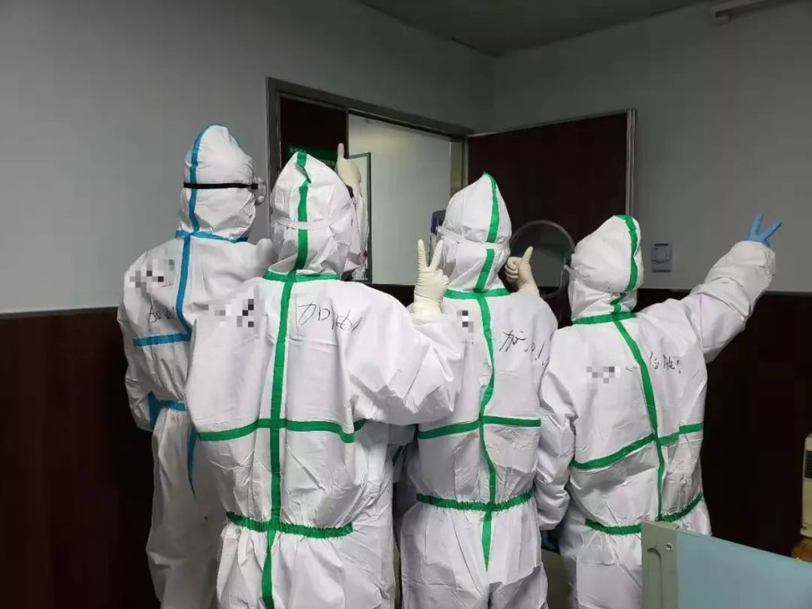
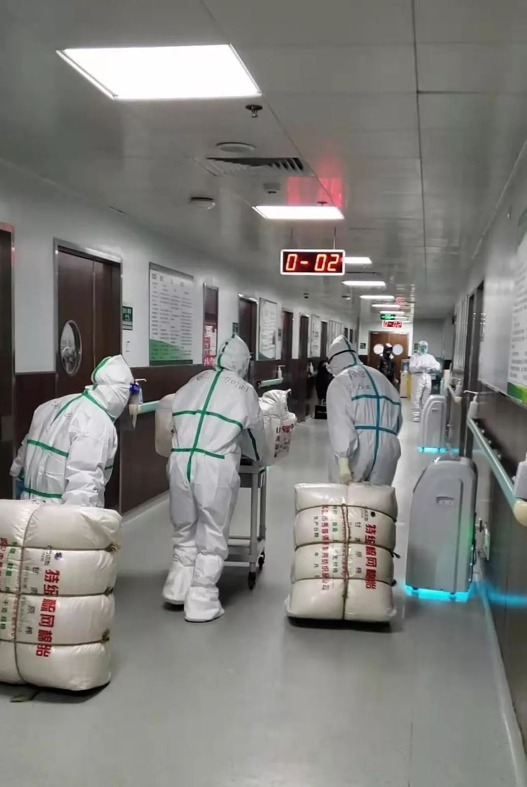

独家深访：从发现到封城，武汉一线医护复盘疫情为何爆发
原文链接 备份链接 “湖北省委书记说‘绝对不能让黄冈变成第二个武汉’，希望其他城市不会重复武汉的悲剧！” “我上班去了！我的防护绝对专业，莫担心！你把我说的都写出来，就说武汉一线医护再难也能坚持再上一阵子班，关在屋里的普通老百姓先不要 …
医用物资频频告急，奋战在抗击新冠肺炎疫情一线的医务人员，他们在经历怎样的生活？
他们中，有人被确诊感染后写下了遗书，有人在床边崩溃大哭，有人被家属奉劝不要去一线……当医护人员被感染变成患者时，他们会和普通武汉市民一样恐惧、脆弱、不知明天将如何到来；但当怀抱着“救死扶伤”这个神圣的使命时，又总是重拾希望。
━━━━━
恐惧
39岁的刘丽萍是武汉市某二甲医院的主治医生。2020年1月21日，她和丈夫孩子回老家宜昌看望长辈。第二天，她收到通知说即日起医护人员不得离开武汉。当天她赶回武汉并开始发烧。她知道自己大概率是被新型冠状病毒感染了。
1月23日，武汉宣布封城。这天，刘丽萍开始写遗书。此时她的孩子开始有发烧症状，因此在遗书的开头她先向家人表达了愧疚之情。接着，她说，妈妈虽然不能陪着你长大，但妈妈会一直爱你。而后，她到医院排队做CT检查，双肺呈毛玻璃状病灶。没有核酸检测名额，她独自在家居家隔离。此时，她的医生身份让位于了一个普通武汉市民的身份：恐惧、脆弱、不知明天将如何到来。
恐惧也是罗琴得知自己被感染后的第一反应。“脑子已经木掉了，那一瞬间自己有点不能接受。”罗琴是和刘丽萍同家医院的医师，2003年起就在目前的科室工作。1月21日下午5点，CT显示她的双肺呈现斑片造影。1月23日，核酸检测为阳性，她被确诊。她很忐忑。17号收治重症病人后，她很警惕地让丈夫、孩子搬到了公婆家，不过那几天，她和同事同吃同住，没有任何隔离措施。之后密切接触的同事陆续做了CT检查，均没有异常。由于病毒有潜伏期，此时其实依然无法判定同事们的安全，但罗琴说：“现在大家都在一线上，没办法下来。”
对于该医院的很多医护人员而言，参与这次疫情防控是一次临危受命。1月21日，该医院被武汉市卫健委定为发热患者定点诊疗医院之一，并接受武汉一家三甲医院定点支援。
该院59岁的门诊护士方丽娟回忆说当时发热门诊每天都有一千多个病人，她为他们分诊、测量体温、送到医生办公室。走完这个流程得二十多分钟，而她当时只有医用外科口罩，没有护目镜。1月30日，方丽娟被确诊感染新型冠状病毒，目前她正与同院另一名感染护士住在同一病房接受治疗。

▲一线医护人员。受访者供图
━━━━━
感染
居家隔离的一周，刘丽萍根据自己的医学知识给自己吃药。孩子烧退了，丈夫又开始发烧。刘丽萍本是个积极乐观的人，可那段时间她精神接近崩溃。她天天失眠，不开电视、不看手机，每天睁着眼睛看天花板，甚至打过心理求助热线寻求帮助。
1月30日，服用完阿奇霉素和奥司他韦两种药后，她感觉脑袋一崩，之后就失去了意识。不知过了多久她才醒过来，全身无力地在地板上躺了一个多小时后，她向院方发出了求救信号。她被带到医院，两次核酸检测都为阳性后，她被确诊。此时床位已相当紧张，必须等有人出院才有空缺。
刘丽萍是在给病人做检查时被感染的。当时医院收了几个直接住进ICU的重症患者，为了解病人情况，刘丽萍须到病人床边做检查。虽然当时官方宣称新型冠状病毒不会人传人，但一线的医生早就发现了问题。刘丽萍有做防护的意识，但她没有设备。“去的时候我心里就有数了，但没有办法，病人来了你不能不管。”因病人体重较大不易操作，她近距离接触了病人的身体。“你在这个岗位上，你不去谁去啊？”
几乎所有接受采访的被感染医护人员都知道他们是与病毒正面交锋的人。门诊护士方丽娟说四个给发热病人测体温的护士有两个被感染，而在用压舌板为病人检查咽喉情况时，病人呼出来的气体会直接喷在护士的脸上。
这种可见的危险让罗琴的丈夫徐树很担心。徐树是武汉某高校老师，有不少高中同学在华中科技大学同济医学院附属同济医院（以下简称同济医院）和华中科技大学同济医学院附属协和医院（以下简称协和医院）工作。根据同学们反馈的一线情况，他一度想让体质较差的妻子打退堂鼓。“哪怕不要这份工作了也无所谓。”他说。但随着疫情发展，他意识到这是当时武汉所有医院和所有医护人员都必须要面临的危险时，他没有再劝妻子。
妻子被感染时，徐树正好在阅读2003年非典型肺炎时期的报道。他想到了最坏的结局。2003年时很多医护工作者被感染、被隔离，直到去世都没再与亲人相见。徐树决定暂时不告诉罗琴的父母。
罗琴是1月17日被感染的。那天值班时，她接待了三个确诊病人。其中有一个呼吸衰竭，进来就被判定为病危，抽完血后罗琴和家属谈了话并参加了院里的会诊。她原本下午五点就应该下班，但那天直到九点多才忙完。她很累，直接住在了医院。

▲确诊那天，同事给罗琴送去的牛肉粉。受访者供图
罗琴所在的科室，因为科室性质，医护人员的防护意识比其它科室稍强些，接诊时她穿了两层隔离衣、戴了N95口罩和帽子。她的疏漏发生在和家属谈话时。当时人们对病毒潜伏期的感染能力知之甚少。
1月19日，罗琴开始头疼、腹泻、食欲不振。由于这不是新型冠状病毒肺炎感染者的典型症状，她没将自己的病症同肺炎联系起来。19日她排夜班，下午她就在病房输液，晚上正常工作。当天晚上她又收治了三个发热病人，其中一个后来转诊。在医院工作十七年，她从没遇到这么忙的情况。
21日下午，罗琴依然没有出现呼吸道问题，不过头疼加剧了。科室里有四十年临床经验的老主任建议她做个CT，罗琴很犹豫。她体质较差，有轻微的重症肌无力。那段时间不明肺炎很多，虽然CT室在每个病人走后都会做一小时的消毒，但在没有完备的防护设备的情况下，医护人员并不愿意去。1月21日开始，她独自住院。1月25日她第一次复查CT，从一楼走到二楼时感到气促、心慌、胸闷。2月2日下午四点，两次核酸检验都是阴性后，罗琴出院回家。保险起见，丈夫和孩子依然住在公婆家，她独自居住。
━━━━━
康复
“其它疾病你都知道怎么治，但这个真的太未知了。”谈起拍完CT没做核酸测试、无法确诊因而无法住院的那一周时，刘丽萍说。2月2日，罗琴出院的那天，刘丽萍获得了一张床位。
回到熟悉的环境，她的安全感增强了不少。经过一段时间的治疗，发烧、咳嗽、胸痛、腹泻这些症状都有所缓解，食欲也正在恢复。另一个好消息是丈夫退烧了。虽然目前他仍在家中自我隔离，但至少没有生命危险。重怀希望的刘丽萍删掉了绝望时留下的遗书。
她现在比较担心的是科室另一位高烧不退的男同事。他不久前才做了心脏支架手术，仍在恢复期，也因为重症病人做检查而被感染。她说现在医护人员被感染的情况很严重，因为超负荷工作，他们的免疫力也在下降。在医院，刘丽萍时常能见到一些生命的逝去。病人去世后，她得到床边为之做心电图以证明其死亡。世事无常是她很早就认清的事。“能健康地活着太不容易了。原来自己可能很看重的一些事，在生死面前都不算什么。”
刘丽萍2005年毕业于武汉大学医学院，次年开始在医院工作。谈及当初为何选择做医生时，她说：“医生能救死扶伤，是很神圣的事。”
这也是罗琴行医17年的理念。她说自己从不收红包、从不求感激，只因“这是我的职责，我只是在做我应该做的事”。这几年医患关系紧张，她时常觉得伤心，但每次得到病人的信任时，她又觉得自己的工作很有意义。
出院后，罗琴一直在帮医院联系海外捐助物资，经常忙到深夜。从一线“病退”至二线后，罗琴一直在考虑如何帮助同事。她超负荷工作的同事曾因压力太大到她病床前大哭。“现在有很多很多的病人，但医院的救治力量、医疗资源就这么多，他们住不进来，心里就真的特别难过。”罗琴哽咽着说她的很多同事都是24小时上班，“大家都想快一点，抢时间”。

▲一线医护人员。受访者供图
据罗琴了解，目前该医院的物资依然十分紧缺。医护人员上午开始工作后，要一直等做完全部事情才出病区，因为中途一旦外出，防护服就须换掉、N95口罩就没用了。由于缺乏口罩，现在很多医生都是不符合防护标准的口罩和外科医用口罩叠加使用。在病床上时，罗琴就曾在校友群帮助协调物资，甚至请做生意的亲戚帮忙捐赠。她曾联系到广西一家愿意将物资直接捐赠到一线的公司，对方在马来西亚买到一个货柜的N95口罩，结果马来西亚的卖方一听到是运到中国的就毁约了。后来这家公司又重新寻找货源，捐赠了270件防护衣，第二批物资60箱防护衣也将上路。
现在，罗琴最早期的头痛、腹泻症状早已消失，不过依然气短。她咨询了呼吸科主任，对方说肺部还需时间修复，眼下能做的只有等待。她担心自己是假阴性，打算过几天再做次检查——她已迫不及待重回岗位，而上前线的前提是她已确定痊愈、确定不会感染别人。
这一次，徐树决定支持她。他说妻子恢复后一定会去工作，他能做的就是帮她“稳定后方”。比如照顾两岁多的孩子，比如说服希望女儿多休息的岳父岳母，比如贡献出自己的图书馆账号供妻子查阅与呼吸系统相关的医学知识。
1月25日，字节跳动向中国红十字基金会捐赠2亿设立医务保障基金后不久，徐树加入了“帮医护人员做点什么”的行动中。迄今为止，他已为医院十多位被感染的医护人员提交了资助申请。他坦承：“之前都想打退堂鼓，但真到了这份上，我们都还有热血去做点事。”
（文中医务工作者均为“中国红十字基金会字节跳动医务工作者人道救助基金”受助人。应受访者要求，文中均为化名。
2020年1月25日，今日头条、抖音、西瓜视频母公司字节跳动向中国红十字基金会捐赠2亿元人民币，设立“中国红十字基金会字节跳动医务工作者人道救助基金”，为抗击疫情一线医务工作者提供保障。
截至2月12日，全国已经有209位疫情防控一线医务工作者获得资助。其中204位因抗击疫情而不幸感染的一线医务人员，每人获资助10万元；5位因抗击疫情而不幸殉职的一线医务人员，每个家庭获资助100万元。）
点击阅读原文了解疫情防控一线医务人员保障基金
点击下图进入”全国新型冠状病毒感染肺炎实时地图“

*值班编辑 吾彦祖*


原文链接 备份链接 “湖北省委书记说‘绝对不能让黄冈变成第二个武汉’，希望其他城市不会重复武汉的悲剧！” “我上班去了！我的防护绝对专业，莫担心！你把我说的都写出来，就说武汉一线医护再难也能坚持再上一阵子班，关在屋里的普通老百姓先不要 …
原文链接 备份链接 医学史 记录你的行医故事 按 本文根据武汉某三甲医院呼吸内科住院医师牛牛妈口述整理。牛牛妈所在的医院虽然不是新冠病毒肺炎的定点收治医院，但从去年年底至今，呼吸内科从最初大的一个病区扩展到四个病区，一直超载运行。有的人是 …
原文链接 备份链接 【财新网】（记者 周泰来 实习记者 黄晏浩 陈丽金）湖北省鄂州市由于新冠疫情防控压力大，已公开呼吁全市退休、离职医护人员和个体医务工作者积极参与疫情防控工作。据鄂州市政府官网，鄂州市新型冠状病毒感染的肺炎防控指挥部 …
原文链接 备份链接 武汉正在该市蔡甸区职工疗养院，紧急设计建设一个有1000个床位的临时医院，用于集中收治新型冠状病毒肺炎患者。临时医院计划在2月3日前投入使用。 这是学“小汤山模式”。2003年，北京7天建成小汤山医院，接收680名 …
原文链接 备份链接 对病毒的未知、医疗物资缺乏，又因高强度的工作压力影响到免疫力，导致医护感染达到高峰。随着医护人员防护意识、对病毒认识的增强，相关防护措施到位，后期被感染的医护人员应该越来越少 ****文 | 《财经》 …